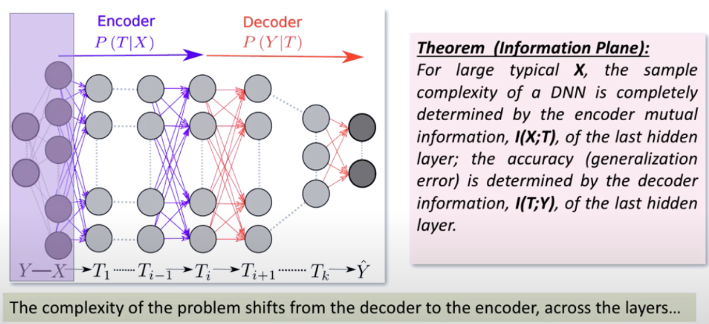
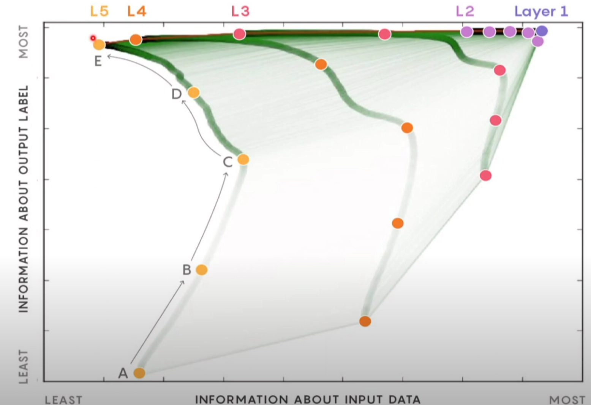

Fusion of Statistical Learning Theory, Information Theory and Stochastic Optimization#
Introduction#
The Vapnik diagram we have seen earlier, a manifestation of the classical statistical learning theory, focused the attention to the hypothesis set aka what kind of functions can be learned. The viewpoint of a hypothesis-driven complexity was used, for pedagogical purposes in the chapters of linear regression and generalized linear classification and under the umbrella of the small number of parameters, statistical learning theorist developed generalization bounds driven by the concept of VC dimension.
Here we claim that such bounds are overly pessimistic and are of very little value today due to the large number of parameters in modern DNNs that seemingly always over parameterize the problems but despite the large number of parameters they possess they are able to generalize well.
More specifically, after a review of basic information theoretic quantities associated with entropy (self-information) and average mutual information, we will recognize that the later offers a more promising approach to understanding the generalization properties of DNNs, effectively replacing the VC dimension, that focuses on what kind of functions can be learned by a model, with a measure of how much information can be learned from the examples and offering a generalization bound based on the input compression.
In addition,we will see that the noisy gradient plays an important role in the optimization of the DNNs and SGD converges to a maximal entropy weight distribution. Its dynamics seem to possess two phases: a first phase when mutual information about the output label is increasing and a second phase when information about the input data is decreasing aka data representation is compressed. Its convergence time to an optimal solution is also heavily influenced by the number of layers of the network.
Relative entropy or KL Divergence#
In many settings we need to have a metric that compares two probability distributions \(\{P,Q\}\) in terms of their “distance” from each other (the quotes will be explained shortly). This is given by the quantity known as relative entropy or KL divergence. For discrete distributions, the relative entropy is defined as,
For continuous distributions, the sum is replaced by an integral,
If the two distributions are identical, \(KL=0\) - in general however \(KL(P||Q) \ge 0\). One key element to understand is that \(KL\) is not a true distance metric as its asymmetric.

The following video is instructive for understanding the KL divergence using coin tossing distributions as an example.
Conditional Entropy#
The conditional entropy \(H(Y|X)\) is a measure of the uncertainty of a random variable \(Y\) given that the value of another random variable \(X\) is known. It is defined as:
Below is a handy rule for entropy,
We can see in the diagram shown below a key relationship between joint entropy, conditional entropies and average mutual information that we will discuss further next.

Clearly, $\(H(Y|X) = H(X,Y) - H(X)\)$
Average Mutual Information (MI)#
Very close to the relative entropy is a measure called mutual information. These expressions quantify the amount of information obtained about one variable through the other, reflecting their mutual dependence.
For discrete random variables \(X\) and \(Y\), the mutual information \(I(X; Y)\) is defined as:
For continuous random variables, the mutual information \(I(X; Y)\) is given by:
In both formulas:
\(P(x, y)\) or \(p(x, y)\) represents the joint probability distribution of \(X\) and \(Y\), for discrete or continuous variables respectively.
\(P(x)\) and \(P(y)\) are the marginal probability distributions of \(X\) and \(Y\).
The logarithm can be base 2 for bits or natural for nats, depending on the context.
A handy rule is the chain rule for mutual information,
Example#
Let’s consider an example with two urns, A and B, to calculate the mutual information between the random variable \(x\) that selects an urn and the random variable \(y\) that represents drawing a black or white widget from the selected urn. Assume the following probabilities:
Probability of selecting urn A, \(P(x=A) = 0.5\),
Probability of selecting urn B, \(P(x=B) = 0.5\),
Probability of drawing a black widget from urn A, \(P(y=0 | x=A) = 0.8\),
Probability of drawing a white widget from urn A, \(P(y=1 | x=A) = 0.2\),
Probability of drawing a black widget from urn B, \(P(y=0 | x=B) = 0.1\),
Probability of drawing a white widget from urn B, \(P(y=1 | x=B) = 0.9\).
The joint probabilities \(P(x, y)\) and the marginal probabilities \(P(y)\) can be calculated as follows:
\(P(x=A, y=0) = P(x=A) \cdot P(y=0 | x=A) = 0.5 \cdot 0.8 = 0.4\),
\(P(x=A, y=1) = P(x=A) \cdot P(y=1 | x=A) = 0.5 \cdot 0.2 = 0.1\),
\(P(x=B, y=0) = P(x=B) \cdot P(y=0 | x=B) = 0.5 \cdot 0.1 = 0.05\),
\(P(x=B, y=1) = P(x=B) \cdot P(y=1 | x=B) = 0.5 \cdot 0.9 = 0.45\).
The marginal probability \(P(y)\) is obtained by summing over the possible values of \(x\):
\(P(y=0) = P(x=A, y=0) + P(x=B, y=0) = 0.4 + 0.05 = 0.45\),
\(P(y=1) = P(x=A, y=1) + P(x=B, y=1) = 0.1 + 0.45 = 0.55\).
Now, the mutual information \(I(x; y)\) can be calculated using the formula:
Substituting the values:
import numpy as np
# Joint probabilities
p_A0 = 0.4
p_A1 = 0.1
p_B0 = 0.05
p_B1 = 0.45
# Marginal probabilities
P_xA = 0.5
P_xB = 0.5
p_0 = p_A0 + p_B0
p_1 = p_A1 + p_B1
# Compute mutual information I(x; y)
I_xy = (
p_A0 * np.log2(p_A0 / (P_xA * p_0)) +
p_A1 * np.log2(p_A1 / (P_xA * p_1)) +
p_B0 * np.log2(p_B0 / (P_xB * p_0)) +
p_B1 * np.log2(p_B1 / (P_xB * p_1))
)
print(I_xy)
The mutual information \(I(x; y)\) between the random variable \(x\) that selects the urn and the random variable \(y\) that samples the black or white widget out of the urn is approximately 0.397 bits. This value quantifies the amount of information gained about the outcome of the widget color through the choice of the urn, demonstrating the mutual dependence between these two variables.
DNN as a Markov Chain#
Let us consider a dense neural network (DNN) that consists of matrices \(W_1-W_L\) and biases \(b_1-b_L\). The DNN in our context here can be seen as a Markov chain, with input \(X\), output \(Y\) and \(H_l = f_l(H_{l-1}W_l + b_l)\) as the outputs of the \(l\)-th layer of the network.
We treat each layer output a single multidimensional random variable that encodes the input \(X\) via an encoder \(p_model(H_l|X)\) and predicts the output via a decoder \(p_model(Y|H_l)\).

This means that the input is encoded differently by each layer and the output is formed by different decoders. The deeper the layer the encoder becomes more complicated but its decoder less so. In the limit of the last layer the decoder is trivially what we called the head (a sigmoidal neuron for binary classification) but its encoder is much more complicated as compared to that of the first layer.
Data Processing Inequality#
Quantitatively, we use one of the key inequalities in information theory, the data processing inequality, that states that if we have a Markov chain \(X \rightarrow H \rightarrow Y\), then
Given that a neural network is a Markov chain, the data processing inequality simply says that the mutual information of the input and each of the hidden layers is decreasing as we move through the layers of the network.
Note
The analogy with the information gain of decision trees
The data processing inequality is analogous to the information gain of decision trees. In decision trees, the information gain is the difference between the entropy of the parent node and the weighted sum of the entropies of the child nodes. The information gain is used to decide which feature to split on. The data processing inequality is similar in that it measures the reduction in uncertainty of the output given the input.

Reparameterization Invariance#
The other key relationship we will use is that the mutual information is invariant to reparameterization when the transformation is invertible.
The Information Plane Theorem#
Given the setting of the problem we outlined, the mutual information between the layers of the network is governed by the following inequalities that are derived from the data processing inequality,
Using these inequalities we can arrive at the following theorem that establishes the trade off between sample complexity and accuracy. It states that the sample complexity is entirely determined by the mutual information between the input and the hidden layers of the network \(I(X;H) = H(X) - H(X|H)\) and the generalization error (accuracy) is determined by the mutual information between the last hidden layer and the output \(I(H;Y) = H(Y) - H(Y|H)\).
The two functions \(I(X;H)\) and \(I(H;Y)\) are called the information plane and the theorem states that the network learns by moving through the information plane as shown in the following animation.
The points shown in the animation are the information plane coordinates of multiple networks at different stages of the training. Each network has been initialized with initial weights (Gaussian). Different colors represent the different layers of those networks. The network starts with a high sample complexity and low accuracy and moves to a low sample complexity and high accuracy. There is a typo - the vertical axis of the 2nd plot should read “generalization error” instead of “precision”.
From the animation it is evident the behavior of each hidden layer: as the epochs progress it will move rapidly up to gain information about the output and then move to the left forgetting information about the input. The later compression factor is dependent on the layer where layers closer to the input forget less of the input and deeper layers forget more.

Estimation of Mutual Information#
An important complication that prevents an even wider adoption of information-based analyses is that mutual information and related quantities are notoriously difficult to estimate from empirical data. Mutual information involves averages of logarithms of \(p\), the underlying probability distribution.Since, for small \(p\), \(– log_2 p → ∞\), the ranges of x, y where \(p\) is small and hence cannot be sampled and estimated reliably from data contribute disproportionately to the value of information. In other words, unlike correlation functions, information depends nonlinearly on \(p\), so that these sampling errors result in a strong sample size dependent and \(p\) -dependent bias in information estimates. In fact, even for discrete data, there can be no universally unbiased estimators of information until the number of samples, \(m\), is much larger than the cardinality of the underlying distribution, \(n\). This means that, for continuous variables, universally unbiased information estimators do not exist at all. These simple observations have resulted in a lively field of developing entropy / information estimators for discrete variables, which work under a variety of different assumptions .
One of the MI estimators is based on the discretization of the continuous vector random variables and then doing the joint and marginal probabilities in this discrete space approximating the actual densities. For an example of a method see this estimator that borrows heavily from the [non-parametric entropy estimation toolb]
Digging further#
If you are a visual learner, the visual information theory blog post is a good starting point to the baiscs of information theory. MacKay’s book (Chapter 2) goes much deeper on information theory concepts and you can test your understanding by doing the exercises in that chapter.